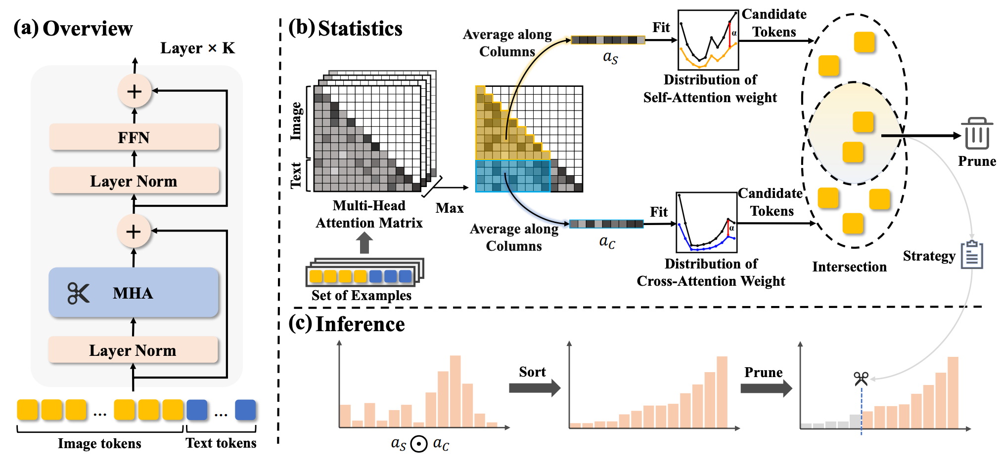
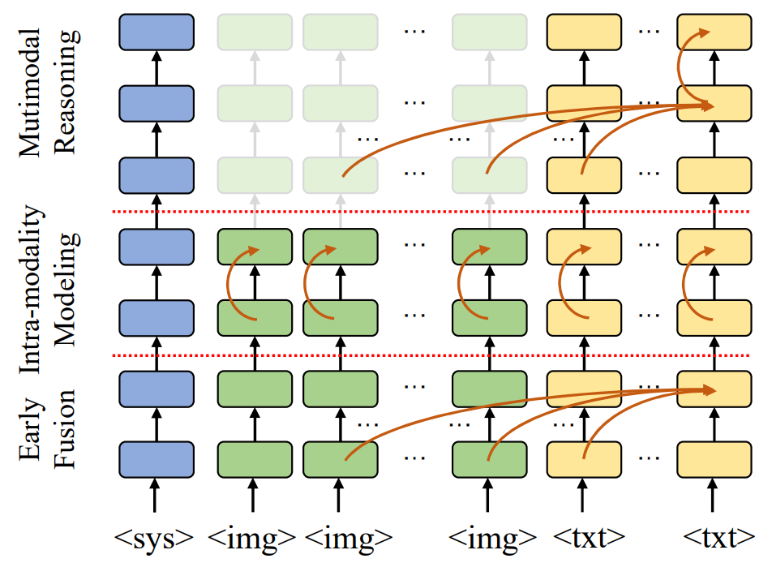
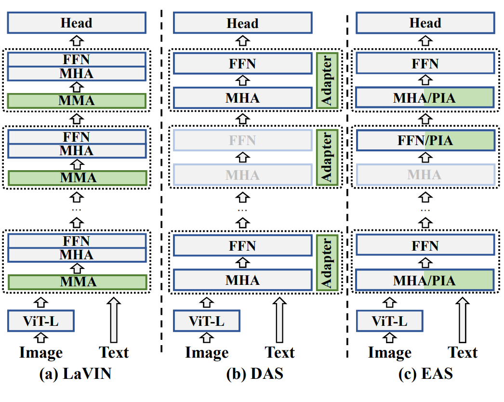
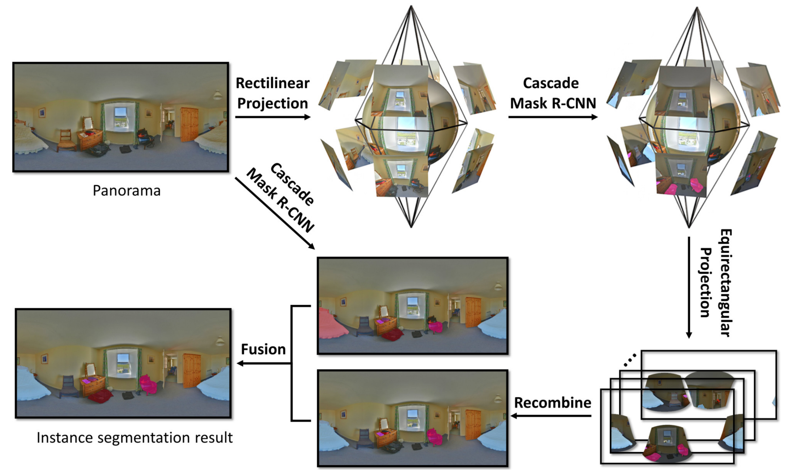

Check my Google Scholar for the most updated list of publications.

[1] Fit and Prune: Fast and Training-Free Visual Token Pruning for Multi-modal Large Language Models
Weihao Ye, Qiong Wu, Wenhao Lin, Yiyi Zhou. AAAI 2025 (Citations: 15) This paper proposes a training-free visual token pruning method based on attention distribution fitting, significantly boosting inference efficiency of MLLMs.

[2] Accelerating Multimodal Large Language Models via Dynamic Visual-Token Exit and the Empirical Findings
Qiong Wu, Wenhao Lin, Weihao Ye, Yiyi Zhou, Xiaoshuai Sun, Rongrong Ji. NeurIPS 2025 (under review) (Citations: 3) This work introduces a dynamic visual token exit mechanism to accelerate MLLMs, along with extensive empirical studies.

[3] Not All Attention is Needed: Parameter and Computation Efficient Transfer Learning for Multi-modal Large Language Models
Qiong Wu, Weihao Ye, Yiyi Zhou, Xiaoshuai Sun, Rongrong Ji. IJCV (under review) (Citations: 8) This paper proposes an efficient fine-tuning method that skips redundant attention heads using Propagation-Information Adapter (PIA), reducing computational cost.

[4] A Learning-based Framework for Multi-View Instance Segmentation in Panorama
Weihao Ye*, Ziyang Mai*, Qiudan Zhang, Xu Wang. DSAA 2022 (CCF-C) (Citations: 1) This work introduces a multi-view joint framework for panoramic instance segmentation, improving segmentation accuracy.
|
{kind=link}